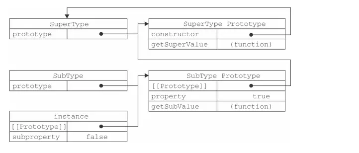
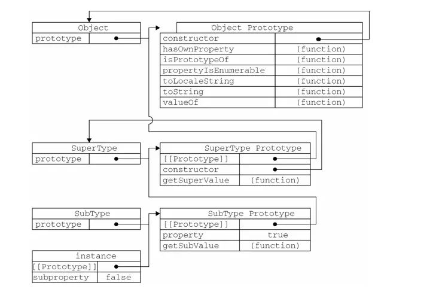
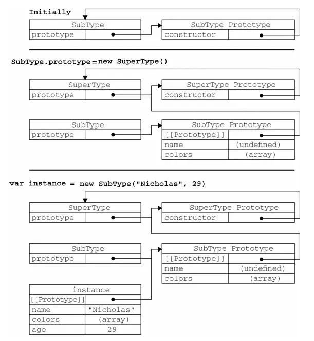

JS实现继承的方法以及优缺点
整理《javascript高级程序设计》中继承的方法以及优缺点。
1. 原型链
ECMAScript中描述了原型链的概念，并将原型链作为实现继承的主要方法。
原型链继承的基本思想是利用原型让一个引用类型继承另一个引用类型的属性和方法。
简单回顾一下构造函数、原型和实例的关系：每个构造函数都有一个原型对象，原型对象都包含一个指向构造函数的指针，而实例都包含一个指向原型对象的内部指针。
那么，假如我们让原型对象等于另一个类型的实例，结果会怎么样呢？显然，此时的原型对象将包含一个指向另一个原型的指针，相应地，另一个原型中也包含着一个指向另一个构造函数的指针。假如另一个原型又是另一个类型的实例，那么上述关系依然成立，如此层层递进，就构成了实例与原型的链条。这就是所谓原型链的基本概念。
function SuperType () {
this.property = true;
}
SuperType.prototype.getSuperValue = function () {
return this.property;
}
function SubType () {
this.subProperty = false;
}
SubType.prototype = new SuperType();
SubType.prototype.getSubValue = function (){
return this.subproperty;
};
var instance = new SubType();
console.log(instance.getSuperValue()); //true
以上代码定义了两个类型：SuperType和SubType。每个类型分别有一个属性和一个方法。它们的主要区别是SubType继承了SuperType，而继承是通过创建SuperType的实例，并将该实例赋给SubType.prototype实现的。实现的本质是重写原型对象，代之以一个新类型的实例。换句话说，原来存在于SuperType的实例中的所有属性和方法，现在也存在于SubType.prototype中了。在确立了继承关系之后，我们给SubType.prototype添加了一个方法，这样就在继承了SuperType的属性和方法的基础上又添加了一个新方法。

要注意instance.constructor现在指向的是SuperType，这是因为原来SubType.prototype中的constructor被重写了的缘故。实际上，不是SubType的原型的constructor属性被重写了，而是SubType的原型指向了另一个对象——SuperType的原型，而这个原型对象的constructor属性指向的是SuperType。
别忘记默认的原型，事实上，前面例子中展示的原型链还少一环。我们知道，所有引用类型默认都继承了Object，而这个继承也是通过原型链实现的。大家要记住，所有函数的默认原型都是Object的实例，因此默认原型都会包含一个内部指针，指向Object.prototype。这也正是所有自定义类型都会继承toString()、valueOf()等默认方法的根本原因。

缺点:
- 子类实例共享属性，造成实例间的属性会相互影响。(包含引用类型值的原型)
function SuperType () { this.colors = ["red", "blue", "green"]; } function SubType () { } //继承了SuperType SubType.prototype = new SuperType(); var instance1 = new SubType(); instance1.colors.push("black"); console.log(instance1.colors); //"red,blue,green,black" var instance2 = new SubType(); console.log(instance2.colors); //"red,blue,green,black" - 原型链的第二个问题是，在创建子类型的实例时，不能向超类型的构造函数中传递参数。实际上，应该说是没有办法在不影响所有对象实例的情况下，给超类型的构造函数传递参数。有鉴于此，再加上前面刚刚讨论过的由于原型中包含引用类型值所带来的问题，实践中很少会单独使用原型链
2. 借用构造函数
在子类型构造函数的内部调用超类型构造函数
function SuperType () {
this.colors = ['red', 'blue', 'green'];
}
function SubType () {
SuperType.call(this);
}
var instance1 = new SubType();
instance1.colors.push('black');
console.log(instance1.colors); // ["red", "blue", "green", "black"]
var instance2 = new SubType();
console.log(instance2.colors); // ["red", "blue", "green"]通过使用call()方法（或apply()方法也可以），我们实际上是在（未来将要）新创建的SubType实例的环境下调用了SuperType构造函数。这样一来，就会在新SubType对象上执行SuperType()函数中定义的所有对象初始化代码。结果，SubType的每个实例就都会具有自己的colors属性的副本了。
对于原型链而言，借用构造函数有一个很大的优势，即可以在子类型构造函数中向超类型构造函数传递参数。
function SuperType(name) {
this.name = name;
}
function SubType () {
// 继承了SuperType, 同时还传递了参数
SuperType.call(this, 'Jay');
// 实例属性
this.age = 20;
}
var instance = new SubType();
console.log(instance.name); // jay
console.log(instance.age); // 20缺点:
- 方法都在构造函数中定义，因此函数复用就无从谈起了。而且，在超类型的原型中定义的方法，对子类型而言也是不可见的，结果所有类型都只能使用构造函数模式
3. 组合继承
组合继承（combination inheritance），有时候也叫做伪经典继承，指的是将原型链和借用构造函数的技术组合到一块，从而发挥二者之长的一种继承模式。其背后的思路是使用原型链实现对原型属性和方法的继承，而通过借用构造函数来实现对实例属性的继承。这样，既通过在原型上定义方法实现了函数复用，又能够保证每个实例都有它自己的属性。
组合继承避免了原型链和借用构造函数的缺陷，融合了它们的优点，成为JavaScript中最常用的继承模式。而且，instanceof和isPrototypeOf也能够用于识别基于组合继承创建的对象。function SuperType (name) { this.name = name; this.colors = ['red', 'blue', 'green']; } SuperType.prototype.sayName = function () { console.log(this.name); } function SubType (name, age) { // 继承属性 SuperType.call(this, name); this.age = age; } // 继承方法 SubType.prototype = new SuperType(); SubType.prototype.sayAge = function () { console.log(this.age); } var instance1 = new SubType('jay', 20); instance1.colors.push('black'); console.log(instance1.colors); // ["red", "blue", "green", "black"] instance1.sayName(); // jay instance1.sayAge(); // 20 var instance2 = new SubType('chou', 21); console.log(instance2.colors); // ["red", "blue", "green"] instance2.sayName(); // chou instance2.sayAge(); // 21
缺点: - 无论什么情况下，都会调用两次超类型构造函数：一次是在创建子类型原型的时候，另一次是在子类型构造函数内部，造成内存浪费
4. 原型式继承
这种方法并没有使用严格意义上的构造函数。借助原型可以基于已有的对象创建新对象，同时还不必因此创建自定义类型
ECMAScript 5通过新增Object.create()方法规范化了原型式继承。这个方法接收两个参数：一个用作新对象原型的对象和（可选的）一个为新对象定义额外属性的对象。在传入一个参数的情况下，Object.create()与object()方法的行为相同。function object (o) { function F () {} F.prototype = o; return new F(); } var person = { name: "Nicholas", friends: ["Shelby", "Court", "Van"] }; var anotherPerson = object(person); anotherPerson.name = "Greg"; anotherPerson.friends.push("Rob"); var yetAnotherPerson = object(person); yetAnotherPerson.name = "Linda"; yetAnotherPerson.friends.push("Barbie"); console.log(person.friends); // "Shelby,Court,Van,Rob,Barbie"
Object.create()方法的第二个参数与Object.defineProperties()方法的第二个参数格式相同：每个属性都是通过自己的描述符定义的。以这种方式指定的任何属性都会覆盖原型对象上的同名属性
var person = {
name: "Nicholas",
friends: ["Shelby", "Court", "Van"]
};
var anotherPerson = Object.create(person, {
name: {
value: "Greg"
}
});
console.log(anotherPerson.name); //"Greg"
缺点:
- 在没有必要兴师动众地创建构造函数，而只想让一个对象与另一个对象保持类似的情况下，原型式继承是完全可以胜任的。不过别忘了，包含引用类型值的属性始终都会共享相应的值，就像使用原型模式一样
5. 寄生式继承
创建一个仅用于封装继承过程的函数，该函数在内部以某种方式来增强对象，最后再像真的是它做了所有工作一样返回对象
在这个例子中，createAnother()函数接收了一个参数，也就是将要作为新对象基础的对象。然后，把这个对象（original）传递给object()函数，将返回的结果赋值给clone。再为clone对象添加一个新方法sayHi()，最后返回clone对象。可以像下面这样来使用createAnother()函数：function createAnother (original) { var clone = Object.create(original); //通过调用函数创建一个新对象 clone.sayHi = function () { //以某种方式来增强这个对象 console.log("hi"); }; return clone; //返回这个对象 }
这个例子中的代码基于person返回了一个新对象——anotherPerson。新对象不仅具有person的所有属性和方法，而且还有自己的sayHi()方法。var person = { name: "Nicholas", friends: ["Shelby", "Court", "Van"] }; var anotherPerson = createAnother(person); anotherPerson.sayHi(); //"hi"
缺点: - 使用寄生式继承来为对象添加函数，会由于不能做到函数复用而降低效率；这一点与构造函数模式类似
6. 寄生组合式继承

所谓寄生组合式继承，即通过借用构造函数来继承属性，通过原型链的混成形式来继承方法。
其背后的基本思路是：不必为了指定子类型的原型而调用超类型的构造函数，我们所需要的无非就是超类型原型的一个副本而已。本质上，就是使用寄生式继承来继承超类型的原型，然后再将结果指定给子类型的原型。寄生组合式继承的基本模式如下所示
function inheritPrototype (subType, superType) {
var prototype = Object.create(superType.prototype); // 创建对象
prototype.constructor = subType; // 增强对象
subType.prototype = prototype; // 指定对象
}这个示例中的inheritPrototype()函数实现了寄生组合式继承的最简单形式。这个函数接收两个参数：子类型构造函数和超类型构造函数。在函数内部，第一步是创建超类型原型的一个副本。第二步是为创建的副本添加constructor属性，从而弥补因重写原型而失去的默认的constructor属性。最后一步，将新创建的对象（即副本）赋值给子类型的原型。
function SuperType(name){
this.name = name;
this.colors = ["red", "blue", "green"];
}
SuperType.prototype.sayName = function(){
console.log(this.name);
};
function SubType(name, age){
SuperType.call(this, name);
this.age = age;
}
inheritPrototype(SubType, SuperType);
SubType.prototype.sayAge = function(){
console.log(this.age);
};
这个例子的高效率体现在它只调用了一次SuperType构造函数，并且因此避免了在SubType.prototype上面创建不必要的、多余的属性。与此同时，原型链还能保持不变；因此，还能够正常使用instanceof和isPrototypeOf()。开发人员普遍认为寄生组合式继承是引用类型最理想的继承范式。